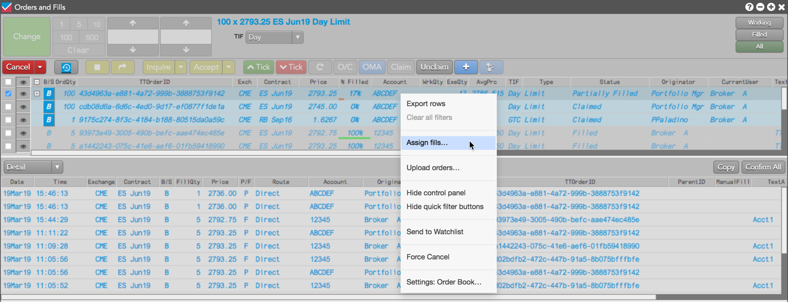
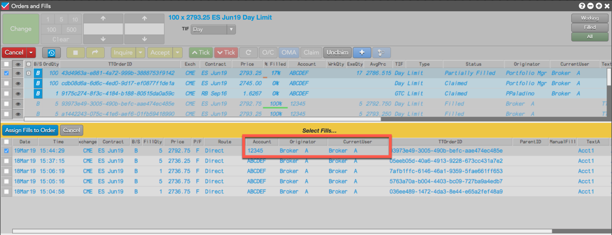
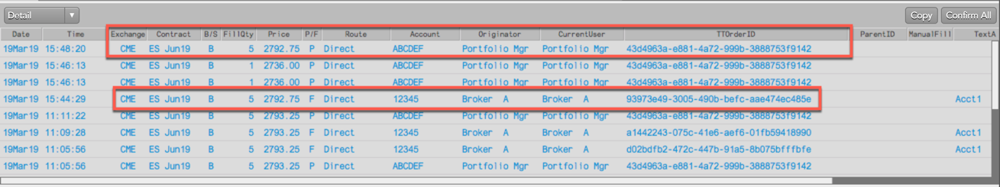
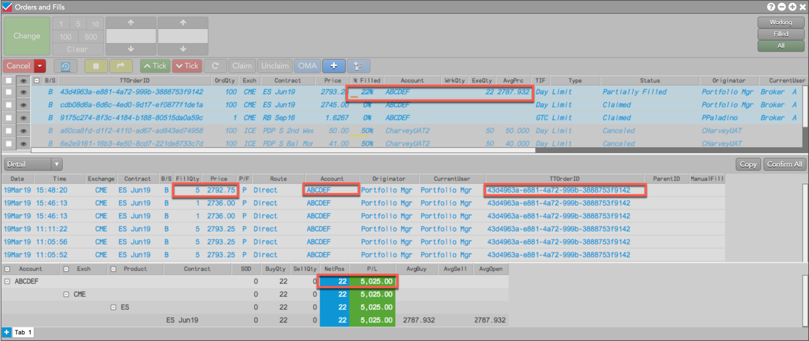
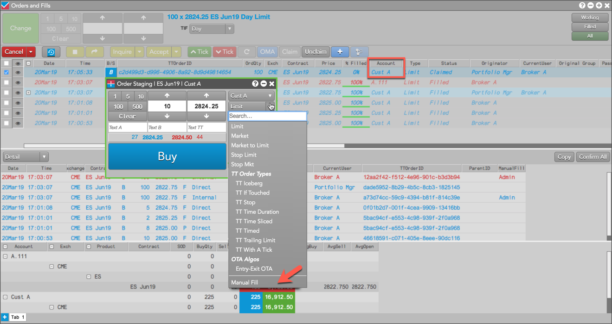
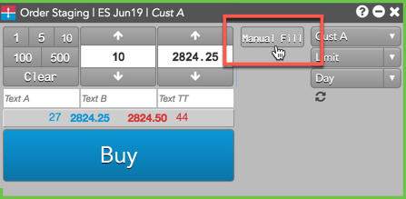
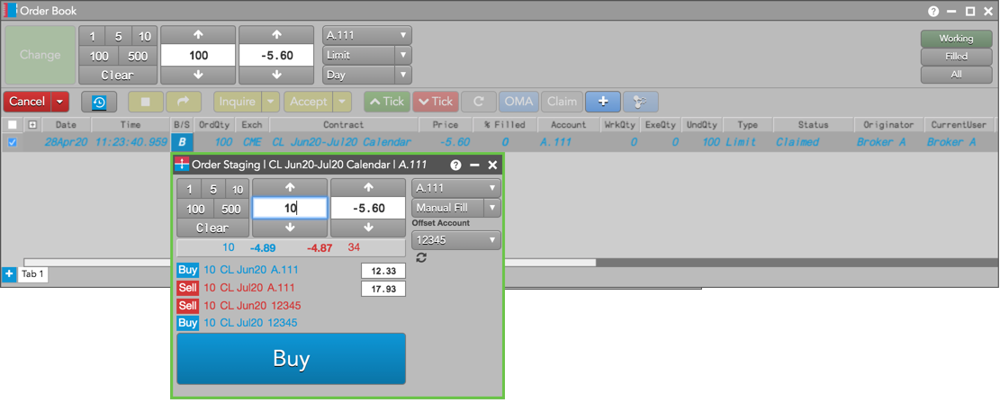
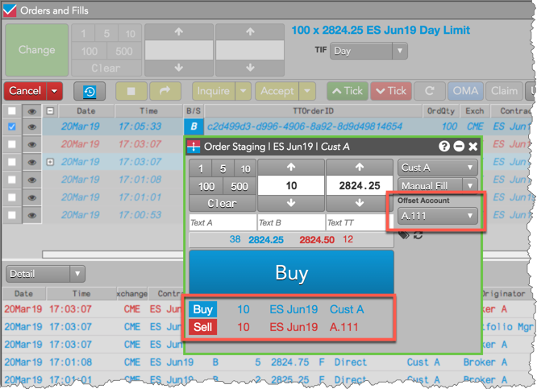
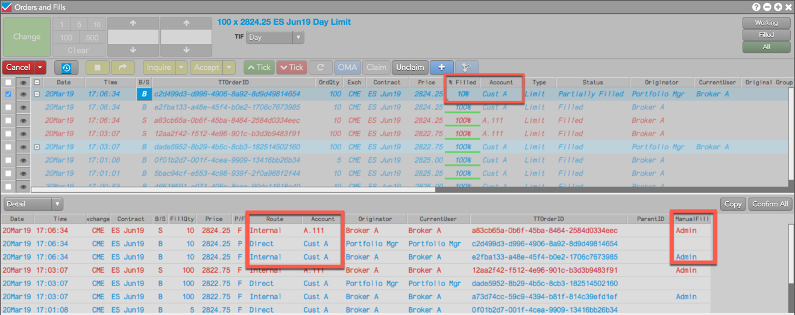

After claiming a care order, the owner can partially or fully fill the order by assigning fills from their inventory using the Orders and Fills widget. When the fills are assigned to the care order, both the owner and originator see the fills and their impact on the remaining quantity of the care order in their Orders and Fills widget.
Note: You must use the Orders and Fills widget to assign fills.
When assigning fills, consider the following:
The owner can also open an Order Ticket in the Order Book to fill part or all of a care order with a manual fill, and then fill the remainder of the order in the market if needed.
To assign fills to a care order:

Note: If a manual or exchange fill exists that matches the side, contract, and is less than or equal to the care order quantity, the context menu shows the “Assign fills…” option.

Tip: Only fills that can be assigned to the care order are shown in the Fills pane.
The fill is added to the care order and appears in both the owner's and originator's Fills panes. The owner (e.g., Broker A) sees the fill from their own account (e.g., 12345) added to the care order account (e.g., ABCDEF).

The originator (e.g., Portfolio Mgr) sees only the fill assigned to their account (e.g., ABCDEF), and the ExeQty, % Filled, and AvgPrc columns are updated in the Order Book. The NetPos and P/L in the Positions pane are also updated based on the assigned FillQty (e.g., 5).

As an owner of a care order, you can fill part or all of a parent care order with a manual fill created using the Order Ticket.
When filling a parent care order with a manual fill, an offsetting manual fill can also be created with the same price and quantity as the original manual fill, but in the opposite Buy/Sell direction.
To fill a care order with a manual fill:
Click the B (Buy) or S (Sell) button in the B/S column for the claimed order.
Note: Off-tick average prices up to seven decimal digits can be entered in the Order Ticket when creating a manual fill for a care order.

The Order Ticket shows the fills for the care order account (e.g., CustA) and offsetting account. By default, the same account is used to offset the fill.
Tip: When filling a care order with a manual fill, you can add a Manual Fill custom action button to the Order Ticket using the right-click Edit custom action buttons option.

As you adjust one leg price, the price of the other leg adjusts automatically to achieve the spread price. If you change the spread price in the Order Ticket, the leg prices will also adjust accordingly.


The owner's manual fill and offsetting manual fill are displayed as "Admin" fills in the ManualFill column.

Both the owner and originator also see the manual fill in the care order account (e.g., CustA) in the Fills pane, and see the % Filled column updated for the partial fill in the Order Book pane of their Orders and Fills widgets.